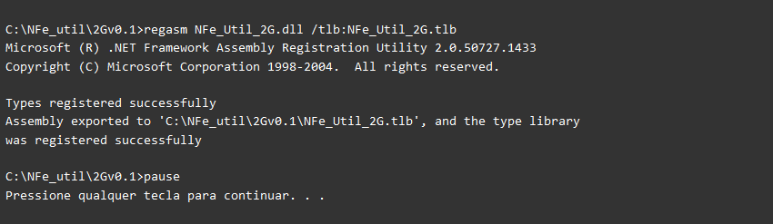

Registro no Windows |
  
|
Registro no Windows |
|
Registro da biblioteca no Windows |
 Pré-requisitos
Pré-requisitos
●ambiente Windows 32 bits (Windows XP/Vista/7);
●framework .NET 2.0 instalado no equipamento;
●usuário com privilégios de administrador;
●UAC - User Account Control desabilitado no Windows Vista/7.
O uso da DLL requer o Framework .NET 2.0 (Microsoft .NET Framework Version 2.0 Redistributable Package (x86)) instalado, que está disponível para download em: http://www.microsoft.com/downloads/details.aspx?displaylang=pt-br&FamilyID=0856eacb-4362-4b0d-8edd-aab15c5e04f5.
A versão do Windows requerida é 32bits (Windows XP, Vista ou 7).
 Compatibilidade com Windows 64 bits
Compatibilidade com Windows 64 bits
Temos relatos de funcionamento normal em versão 64bits do Windows, mas não garantimos a compatibilidade. Caso encontre alguma incompatibilidade, existe a opção de uso de máquina virtual com a versão 32 bits do Windows.
regasm.exe no Windows 64 bits
O regasm.exe que acompanha o pacote é da versão Windows 32 bits, utilize a versão 64 bits que deve existir na pasta do Framework .NET 2.00.
 Framework .NET
Framework .NET
A existência de uma versão superior do Framework .NET não supre a ausência da versão 2.0, pois os frameworks são independentes e a instalação de uma versão inferior não interfere ou prejudica as instalações existentes. Em geral um equipamento que tem uma versão superior do framework (3.0/3.5/4.0) já tem a versão 2.0 requerida instalada.
Após a instalação do Framework, a DLL deve ser registrada no Windows da seguinte forma:
Digitando o comando diretamente no prompt de comando do DOS ou dar dois cliks no arquivo registra_bat:
ou executando o arquivo registraDLL_NFe_2G.bat pelo Explorer
Teremos um resultado semelhante ao seguinte se o registro da DLL ocorrer com sucesso:
 |
Atenção
●O regasm.exe é um utilitário que acompanha o framework .NET 2.0 e foi colocado na pasta apenas para facilitar a instalação, se o usuário desejar, o aplicativo existente no equipamento pode ser utilizado também;
●Observe o resultado do comando para verificar se a DLL foi registrada;
●A digitação do comando pode ser substituída pela execução dos bat (desregistraDLL_NFe_2G.bat e registraDLL_NFe_2G.bat);
●A geração do arquivo de interface ( import type library /Delphi e reference /VB/VBA/VFP) deve ser feita sempre que houver mudança de versão ex.: 1.4x - 1.5x, pois nestes casos em geral acrescentamos novas funcionalidades (chamadas);
●Verifique se a DLL foi registrada chamando a funcionalidade versao da DLL(pode utilizar a opção do aplicativo demo);
●O arquivo da nova versão da DLL registrada deve ser copiada para a pasta da aplicação;
● Os usuários de VB/VBA e VFP devem copiar a DLL para a pasta da aplicação do VB, VBA ou VFP, sendo recomendável que registre a DLL nesta pasta.